Produtos / GQB

Gestor de Qualidade de Balanças
Para a fábrica, o supermercado ou o laboratório que precisa controlar as próprias balanças: prazos de calibração e de manutenção, verificações de rotina, custos e inspeção no chão de fábrica pelo QR code da etiqueta.
 GQB
Painel
GQB
Painel
Precisa de ação
Vencimentos por semana
Veja o GQB em uso
O que tem no GQB
Cada balança tem uma ficha com dados, prazos, histórico, anexos, custos e etiqueta.
-
Painel
- O que precisa de ação hoje
- Percentual em dia, vencimentos dos próximos 30 dias, custo do mês e valor contábil
- Custo por mês e vencimentos por semana em gráfico
-
Equipamentos
- Inventário com busca e filtros por setor, situação, criticidade e prazo
- Cadastro na tela ou por planilha .xlsx
- Registros de calibração, verificação, manutenção, ocorrência, mudança e custo
-
Prazos
- Agenda de vencimentos de calibração e manutenção
- Verificações de rotina diárias, semanais, quinzenais ou mensais, com resultado OK ou NOK
- Situação de cada balança: em operação, em calibração, em manutenção, fora de uso
-
Etiquetas
- Etiqueta com QR code e tag, nos tamanhos 60 × 40, 50 × 30 e 100 × 50 mm
- O QR abre a ficha da balança direto no celular
-
Custos e relatórios
- Custos por categoria: calibração, manutenção, peça e parada
- Depreciação linear e valor contábil
- Relatórios de inventário, vencimentos, custos, depreciação, histórico, verificações, ocorrências e disponibilidade, na tela e em .xlsx
-
Acesso e registro
- Perfis Administrador, Gestor, Inspetor e Leitura
- Cada ação fica registrada com data, usuário e alvo
- Cada empresa com o próprio logo e as próprias cores
Inspeção pelo celular
No chão de fábrica, o inspetor não precisa procurar a balança no sistema.
-
Aponta a câmera para a etiqueta
O modo inspeção lê o QR code. Se o QR estiver gasto, o app lê o número da tag.
-
Vê a ficha resumida
Prazos, situação e as ações possíveis para aquela balança.
-
Registra a verificação
OK ou NOK. Sem sinal, o registro fica guardado no aparelho e sobe quando a conexão volta.
As calibrações aprovadas na Calibração Guiada entram sozinhas na ficha da balança, sem ninguém digitar.
Quem usa
| Qualidade e manutenção | Perfis Administrador e Gestor: cadastro, prazos, custos, relatórios e usuários. |
|---|---|
| Inspetor | Modo inspeção no celular, direto no chão de fábrica. |
| Quem acompanha | Perfil Leitura: vê tudo, não altera nada. |
Outros produtos da GO!


Quer ver o GQB com as suas balanças?
Mande um e-mail com quantas balanças a empresa tem e onde ficam. A gente marca uma demonstração.